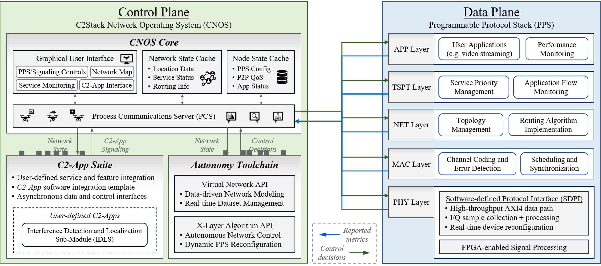
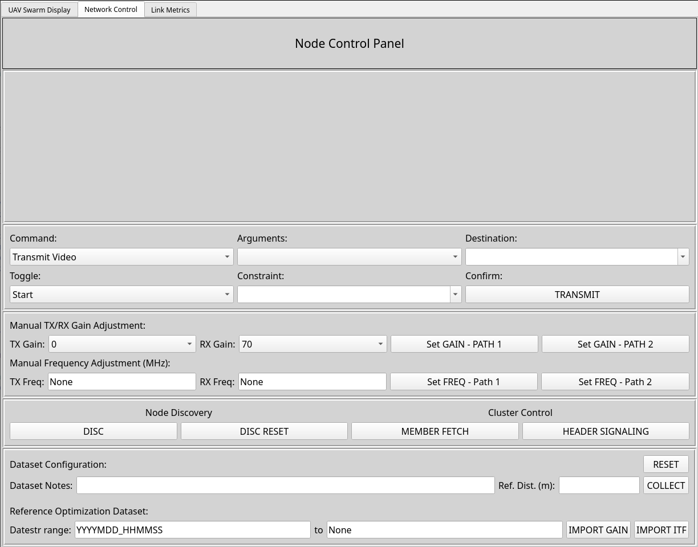

C2Stack
A Protocol Stack and Experimentation Framework for UAV Network Operation, Evaluatin, and Optimization
Introduction
C2Stack is a highly configurable and extensible protocol stack for communications and control in UAV networks, introduced to bridge the gap between theoretical and experimental research in networked UAV systems. C2Stack supports real-time user interaction with deployed UAVs during aerial operations and provides signaling interfaces between UAVs to enable autonomous swarm control and wireless network self-configuration through data-driven control algorithms.
Overview

Data Plane: PPS
The PPS consists of 5 independent layer processes, each of which is intended to supply the features, services, and functionalities defined by the OSI model. Hardware-based threading is employed on PPS startup to improve timing constraints, improve performance, and avoid Python GIL restrictions. The specific properties and behaviors outlined below are subject to change based on continued maintenance and improvement of the C2Stack code base, and PPS service integration will depend on user configuration. YMMV.- APP: Data generation services and top-level rate management. The default peer-to-peer data generation service is a video streaming application, which provides a bufferless (best-effort) video stream with adaptive frame compression based on the discrete cosine transform (DCT). Video reconstruction at the receving node is implemented as in-place frame reconstruction, enabling continuous video playback in lossy channel conditions.
- TSPT: Application flow management and packet priority tagging. High-priority flows will be granted transmit resources before low-priority flows. Additional flow management protocols are left to user implementation.
- NET: Dynamic discovery, topology management, and routing. By default, node discovery is a toggled process and routing tables will be reset on activation. A two-level hierarchical association scheme is enforced, in which ``header'' nodes comprise the ad hoc network, ``member'' nodes register only with a single header, and a single ``ground'' node serves as the core network controller. No more than one ``ground'' node should be registered during network operation.
- MAC: Packet scheduling and logical channelization. By default, all control packets are granted maximum priority and will be transmitted before data signals in the case of strictly logical channelization. In the case of physical channelization, data and control packets will be queued separately. Channel coding is optionally implemented here. On the receive path, duplicate packet detection logic has been implemented to prevent redundant processing.
- PHY: Frame construction and hardware-level queueing, and software-defined protocol interface (SDPI). Due to hardware constraints, 8 PPS packets will be grouped together into one PHY frame. The associated FPGA design interleaves subframes with fine frequency synchronization sequences, so this design ensures that partial frame (i.e. packet-level) recovery is possible under lossy channel conditions. In the case of control packets, each control packet will be copied to fill a single subframe to ensure successful delivery under lossy channel conditions. Note that this layer does NOT provide standalone transmit and receive operation; over-the-air transmission is achieved by coupling this PHY layer with RF hardware via device-specific configuration of the SDPI.
Control Plane: CNOS
CNOS provides a central overview of PPS metrics, state, and configuration options in addition to node- and network-level configuration options. The CNOS GUI provides node- and network-level monitoring and control, in both centralized and distributed scenarios. In both scenarios, we recommend continuous monitoring of all nodes via LAN using external remote desktop control software to ensure real-time performance - in our experience, the combination of aerial channel complexity and experimental waveform design can render distributed state/performance monitoring via in-band signaling unreliable.- CNOS Core: Central processing of CNOS tasks and services, including metrics aggregation, local cache management, and routing and delivery of inter-process communications. Peer-to-peer signaling among CNOS processes is achieved through a socket interface with the PPS, and intra-node process signaling is implemented as a system of GIL-dependent callbacks (Qt [signals/slots](https://doc.qt.io/qt-6/signalsandslots.html)).
- C2-App Suite: Logical repository of user-defined control applications. This serves as a broad sandbox for node- and network-level services supplied by the user, which rely on asynchronous pub/sub-type interaction with state data provided by the CNOS core. In general, C2-Apps should be designed to support parallel, non-exclusive execution and avoid direct interaction with PPS configuration.
- Autonomy Toolchain: Cross-layer networking services (CLNS), dataset generation and retrieval, and management service for user-defined data-driven algorithms. The CLNS hosts all modeling and control algorithms which require direct, synchronous interaction with the CNOS core. In general, CLNS services should be designed for exclusive operation to ensure stateful updates to the PPS configuration.
Software & Hardware Prerequisites
Hardware Requirements
While C2Stack has been designed as generalized experimental toolchain, the default configuration requires the following hardware setup to support existing networking capabilities. For field testing and aerial network deployment, payload carrier systems with integrated power supply for these hardware components must be provided.
| Component | Specification | Notes |
|---|---|---|
| MPSoC Platform | Xilinx Zynq UltraScale+ ZCU102 Evaluation Kit | Quad-core ARM Cortex-A53 (PS) + FPGA fabric (PL) |
| RF Front-End | Analog Devices AD-FMCOMMS3-EBZ | AD9361 transceiver; 70 MHz – 6.0 GHz; up to 56 MHz BW; FMC HPC |
| Onboard Computer (Field Only) | Intel NUC or equivalent mini-PC | Used only for outdoor/field deployments due to compact form factor. For indoor/lab testing, any standard PC or laptop connected via Ethernet can be used instead. |
| Antennas | Omnidirectional monopole antennas | One TX, one RX per node; 2.4 GHz band compatible |
| Attenuator (Indoor) | 12 dB Mini-Circuits fixed RF attenuator | For wired-channel indoor testing to avoid receiver saturation |
| Cables | RG316 SMA coaxial cable | For wired-channel experiments; SMA connectors |
| Webcam | USB webcam | Connected to the host computer for live video data generation |
Software Requirements
- Python: recommend version 3.10 or later (developed using 3.10.14)
- Ubuntu: recommend version 22.04 or later (developed using 24.04)
Recommended Tools
- Remote desktop control software: network-scale deployments of C2Stack will be challenging to control without a centralized management interface. NoMachine is recommended, although recent versions may require paid subscription. With X11 forwarding, SSH should be sufficient for general use
- Anaconda: Python environment managment within Docker containers is handled using Anaconda by default, which allows users to install dependencies automatically as outlined below; use of this feature is optional, but alternative package managers will require manual configuration.
Setup Guide
Environment Setup
Clone the repository, e.g.: git clone git@github.com:WingsLabWireless/C2Stack.git
Using conda: conda create --name
(Optional) Ensure X11 forwarding is available on the host machine.
-
echo $DISPLAY: should return display ID (e.g. ":1") if environment variable is set correctly -
xclock: will open a small clock window if X11 is working
WARNING: step-by-step documentation beyond this point is still being generated and additional details will be provided ASAP.
Operation
Starting the Software
Activate the Python environment (default: conda): conda activate
Start the main program: python3 c2stack_main.py -i ID -t TYPE
ID: node ID, as integer between 1 and 15 TYPE: node role assignment, from 'hdr', 'mbr', or 'gbs' This process will launch several new terminal windows, as well as the GUI.
MPSoC Write: SDPI interface forwarding data from PPS to RF hardware system MPSoC Read & Control: SDPI interface retrieving data from RF hardware system, and facilitating control signaling via direct memory assignment Lyr1: PHY MPSOC: physical layer and SDPI (see above) Lyr1: CH EST: coarse channel estimation services, based on metrics forwarded from RF hardware system Lyr2: LNK: MAC layer (see above) Lyr3: NET: network layer (see above) Lyr4: TSPT: transport layer (see above) Lyr5: CMD: debug command interface for application layer Lyr5: APP - Video Receiver: video reception process for application layer Lyr5: APP - Video Transmitter: video transmission process for application layer CNOS: control plane process NOTE: documentation is ongoing - operating instructions will be provided ASAP - use with caution.
User interface walkthrough

Citation
If you use C2Stack in your research, please cite the following paper (arXiv):
@inproceedings{c2stack2026,
title = {Designing, Deployment and Field Testing of {C2Stack} for Networked Intelligent Software-Defined {UAV}s},
author = {McManus, Maxwell and Zhang, Zhaoxi and Santhi Nivas, Sidharth and Cui, Yuqing and Pattanshetty Vasanth Kumar, Prem Sagar and Zhao, Chenzhi and Mastronarde, Nicholas and Sklivanitis, George and Pados, Dimitris A. and Bentley, Elizabeth Serena and Guan, Zhangyu},
booktitle = {Proc. ACM Conference on Mobile Computing and Networking},
year = {2026}
}License
C2Stack is released under the MIT License.